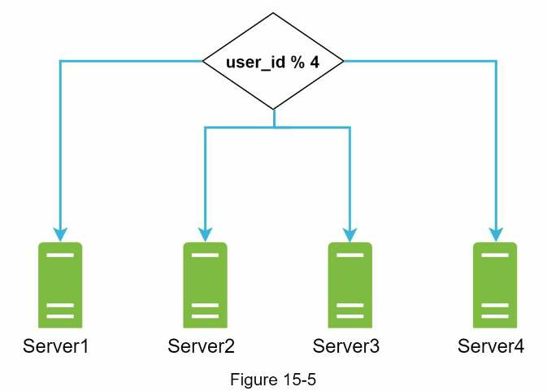
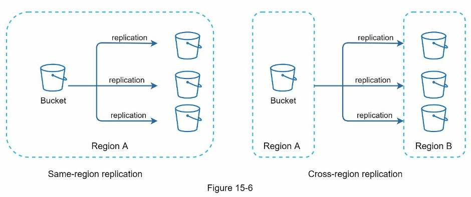
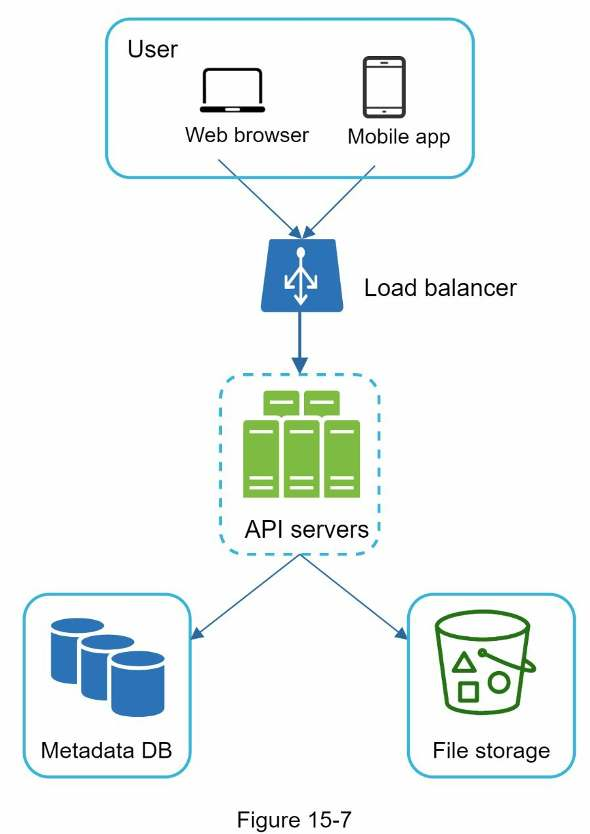
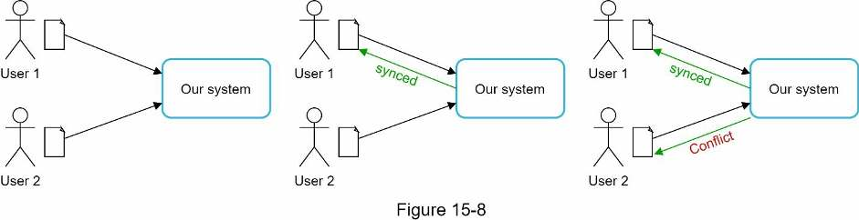
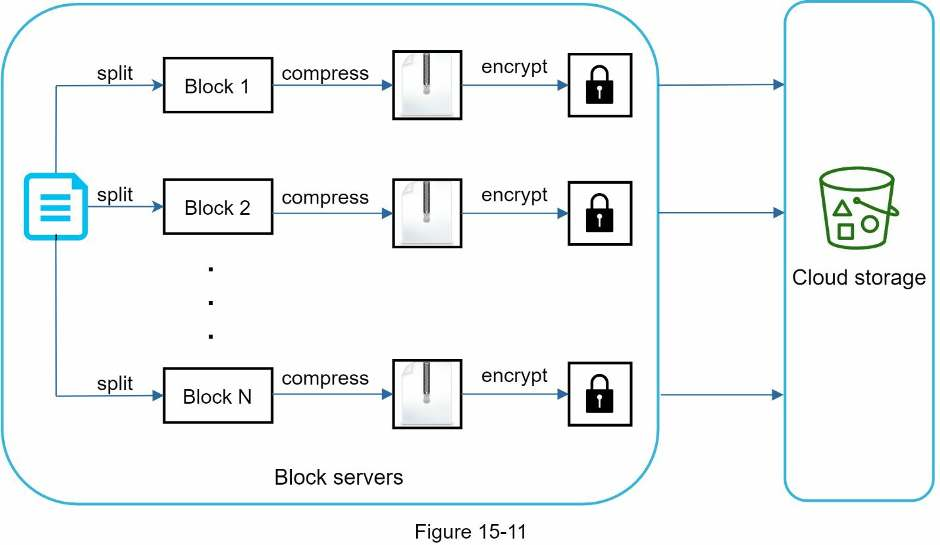
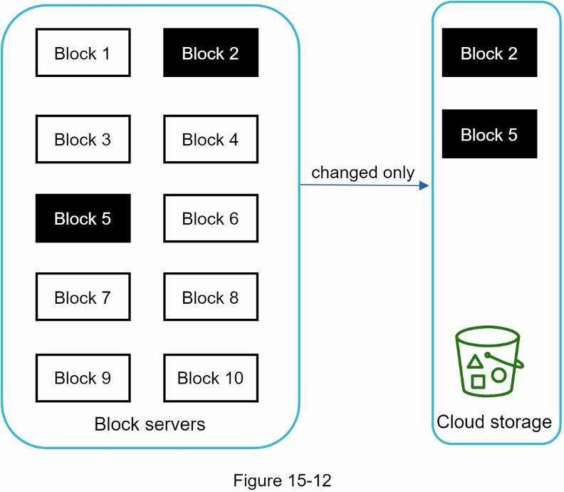
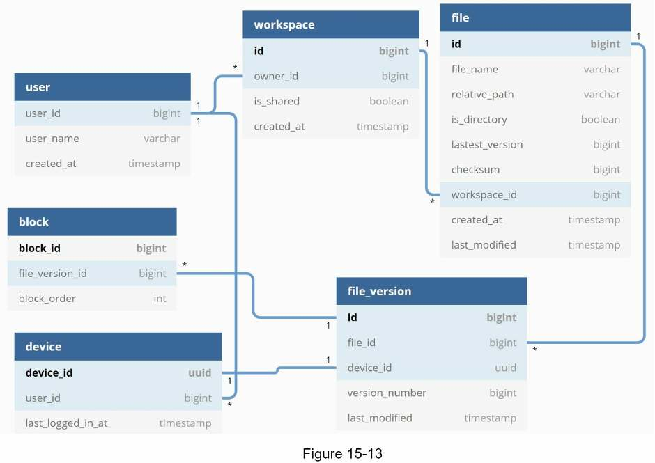
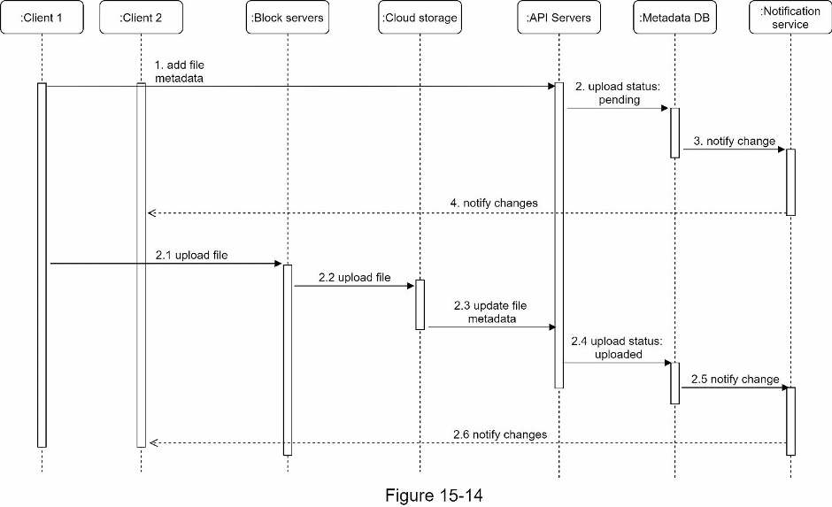
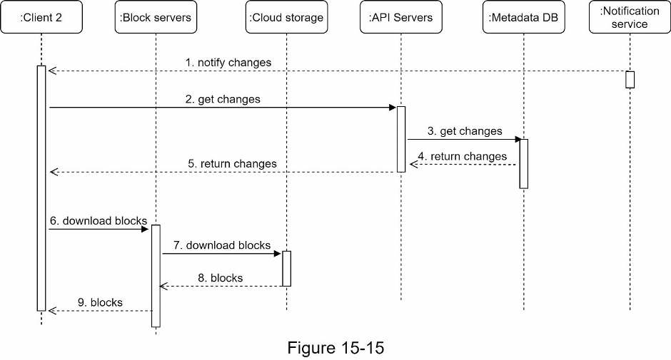

Chapter 15 · Design problem
Design Google Drive
How to store, sync and version files for 10 million daily users: split files into 4 MB blocks, upload only the blocks that change, keep metadata strongly consistent in a relational database, and tell every device about changes with long polling.
TL;DR
- Scope: upload, download, cross-device sync, revisions, sharing, notifications. Web + mobile, any file type, files ≤ 10 GB, encrypted at rest, 10M DAU.
- Numbers: 50M users × 10 GB = 500 PB allocated. 2 uploads per user per day → ~240 upload QPS, 480 at peak.
- Two paths: metadata goes load balancer → API servers → metadata DB and cache. File content goes through block servers to cloud storage (S3, replicated across regions), with cold storage for inactive files.
- Block servers split files into blocks of up to 4 MB, compress and encrypt each one, and use delta sync to upload only the blocks that changed.
- Strong consistency: a relational DB (native ACID), plus cache invalidation on every DB write.
- Conflicts: first version processed wins; the other user gets both copies to merge or override.
- Notifications use long polling (one-way, infrequent). An offline backup queue holds changes for offline clients.
- Save space: dedup blocks by hash, cap and thin out versions, move cold data to S3 Glacier.

Interview answer skeleton
If asked this in an interview, walk through these four beats. Each maps to a section below.
- Clarify (≈5 min) Ask about features (upload/download, sync, notifications), platforms (web + mobile), file types, encryption, size limit (10 GB) and scale (10M DAU). State the non-functional goals: reliability, fast sync, low bandwidth, scalability, availability. Estimate 500 PB and ~240 / 480 upload QPS.
- High level (≈15 min) Start with one server, give the three APIs, then scale: shard by
user_id, move files to S3 with replication, add a load balancer and a separate metadata DB. Draw Figure 15-10 and explain first-version-wins conflicts. - Deep dive (≈20 min) Block servers (4 MB blocks, compress, encrypt, delta sync). Strong consistency with a relational DB. The schema. Upload and download flows. Long polling. Saving storage. Failure handling.
- Wrap up (≈5 min) Uploading straight to cloud storage vs via block servers, and a separate presence service.
Step 1Understand the problem and establish design scope
Google Drive is a big product, so narrow the scope first: which features, what scale, and which non-functional requirements matter most.
Google Drive is a file storage and synchronization service: store documents, photos and videos in the cloud, reach them from any computer, phone or tablet, and share them. Dropbox, OneDrive and iCloud are similar.
| You ask | Interviewer says |
|---|---|
| What are the most important features? | Upload and download files, file sync, and notifications. |
| Mobile app, web app, or both? | Both. |
| Which file formats are supported? | Any file type. |
| Do files need to be encrypted? | Yes, files in storage must be encrypted. |
| Is there a file size limit? | Yes, files must be 10 GB or smaller. |
| How many users does the product have? | 10M DAU. |
Features in scope
- Add files. The easiest way is to drag and drop a file into Google Drive.
- Download files.
- Sync files across multiple devices. A file added on one device is automatically synced to the others.
- See file revisions.
- Share files with friends, family and coworkers.
- Send a notification when a file is edited, deleted, or shared with you.
Out of scope: Google Docs editing and collaboration, where several people edit the same document at the same time.
Non-functional requirements
| Requirement | Why it matters |
|---|---|
| Reliability | Extremely important for a storage system. Data loss is unacceptable. |
| Fast sync speed | If sync takes too long, users get impatient and abandon the product. |
| Bandwidth usage | Unnecessary network traffic makes users unhappy, especially on a mobile data plan. |
| Scalability | The system must handle high volumes of traffic. |
| High availability | Users can keep working when some servers are offline, slowed down, or hit unexpected network errors. |
Back-of-the-envelope estimation
Assumptions
- 50 million signed-up users and 10 million DAU.
- Each user gets 10 GB of free space.
- Users upload 2 files per day; the average file size is 500 KB.
- Read-to-write ratio is 1:1.
Total space allocated = 50 million × 10 GB = 500 PB
Upload QPS = 10 million × 2 / 24 h / 3600 s ≈ 240
Peak QPS = QPS × 2 = 480Exactly, 20,000,000 / 86,400 ≈ 231; the book rounds to ~240. Not in the book but easy to derive: new uploads add 10M × 2 × 500 KB = 10 TB per day.
Step 2Propose high-level design
Start with everything on one server, then fix each problem as it appears until you reach the final design.
Start with a single server
- A web server to upload and download files (Apache).
- A database for metadata such as user data, login info and file info (MySQL).
- A storage system for the files, with 1 TB of space.
Uploaded files live under a root directory, drive/. Each directory inside it is a namespace, holding all the uploaded files of one user. Files keep their original filename on the server. A file or folder is uniquely identified by joining its namespace and relative path.
Figure 15-3, transcribed: the drive/ directory, expanded.
drive/
├── user1/
│ ├── recipes/
│ └── chicken_soup.txt
├── user2/
│ ├── football.mov
│ └── sports.txt
└── user3/
└── best_pic_ever.pngAPIs
You need three APIs. All of them require user authentication and use HTTPS: SSL (Secure Sockets Layer) protects data moving between the client and backend servers. Endpoints are on https://api.example.com.
| API | Endpoint | Params |
|---|---|---|
| Upload a file | /files/upload?uploadType=resumable | uploadType=resumable; data: the local file to upload |
| Download a file | /files/download | path: path of the file to download |
| Get file revisions | /files/list_revisions | path: the file whose revision history you want; limit: the maximum number of revisions to return |
// download params
{
"path": "/recipes/soup/best_soup.txt"
}
// list_revisions params
{
"path": "/recipes/soup/best_soup.txt",
"limit": 20
}Two upload types
- Simple upload: for small files.
- Resumable upload: for large files when there's a high chance of network interruption.
A resumable upload takes three steps:
- Send the initial request to retrieve the resumable URL.
- Upload the data and monitor the upload state.
- If the upload is disturbed, resume it.
Move away from a single server
As uploads grow, you get a space-full alert: the /drive volume shows 10 MB free of 1 TB (Figure 15-4). Users can't upload any more, so this is an emergency.
Fix 1 · Shard the data
Spread files over multiple storage servers, sharded by user_id.

user_id % 4 picks one of four servers, so each user's files live on one server.That stops the fire, but a storage-server outage could still lose data.
Fix 2 · Move files to Amazon S3
Leading companies such as Netflix and Airbnb store files in Amazon S3 (Simple Storage Service), an object storage service known for scalability, availability, security and performance. S3 supports same-region and cross-region replication. A region is a geographic area with AWS data centers; a bucket is like a folder. Copies in several regions guard against data loss and keep files available.

Fix 3 · Decouple the rest
| Change | Why |
|---|---|
| Add a load balancer | Distributes network traffic evenly. If a web server goes down, it redistributes that server's traffic. |
| Add web servers | Behind a load balancer, web servers can be added or removed easily as traffic changes. |
| Move the metadata DB off the server | Avoids a single point of failure. Add replication and sharding to meet the availability and scalability requirements. |
| Store files in S3 | Files are replicated in two separate geographical regions for availability and durability. |

Sync conflicts
In a large storage system, two users sometimes modify the same file or folder at the same time. The rule: the first version processed wins, and the version processed later gets a sync conflict.

To resolve it, the system shows user 2 both copies: their local copy and the latest version from the server. User 2 can merge the two files or override one version with the other. Figure 15-9, transcribed:
SystemDesignInterview ← latest version on the server
⚠ SystemDesignInterview_user 2_conflicted_copy_2019-05-01 ← user 2's local copySyncing one document that several users edit simultaneously is a harder problem; see differential synchronization in the references.
The high-level design
| Component | Role |
|---|---|
| User | Uses the app through a browser or mobile app. |
| Block servers | Upload blocks to cloud storage (block-level storage). A file is split into blocks, each with a unique hash stored in the metadata DB. Each block is an independent object in S3, and a file is rebuilt by joining its blocks in order. Maximum block size is 4 MB, following Dropbox. |
| Cloud storage | Stores files as smaller blocks. |
| Cold storage | Stores inactive data: files not accessed for a long time. |
| Load balancer | Evenly distributes requests among API servers. |
| API servers | Almost everything except the upload flow: user authentication, user profiles, updating file metadata, and so on. |
| Metadata database | Metadata of users, files, blocks, versions, etc. Files themselves are in the cloud; this DB only has metadata. |
| Metadata cache | Caches some metadata for fast retrieval. |
| Notification service | A publisher/subscriber system. When a file is added, edited or removed elsewhere, it notifies the relevant clients so they can pull the latest changes. |
| Offline backup queue | If a client is offline and can't pull changes, the queue stores the info so the changes sync when the client is back online. |
Step 3Design deep dive
Seven topics: block servers, metadata DB, upload flow, download flow, notification service, saving storage space, failure handling.
Block servers
For large files that change often, sending the whole file on every update wastes bandwidth. Two optimizations cut network traffic:
- Delta sync. When a file is modified, only the modified blocks are synced, not the whole file, using a sync algorithm (rsync-style).
- Compression. Compressing blocks greatly reduces their size. The algorithm depends on file type: gzip and bzip2 for text; images and videos need different algorithms.
Block servers do the heavy lifting for uploads. For a new file:
- Split the file into smaller blocks (up to 4 MB each).
- Compress each block.
- Encrypt each block, for security, before it goes to cloud storage.
- Upload the blocks to cloud storage.

On later edits, only modified blocks are transferred. In Figure 15-12, blocks 2 and 5 changed, so only those two are uploaded.

Each 8-character block stands in for a 4 MB block. Version 1 is already in cloud storage, and only blocks whose hash isn't already stored get uploaded. Edit version 2, then try typing one character at the very start.
High consistency requirement
The system needs strong consistency by default: a file must never look different to different clients at the same time. This applies to both the metadata cache and the database layers.
Memory caches use eventual consistency by default, so different replicas might hold different data. To make the cache strongly consistent:
- Keep data in the cache replicas and the master consistent.
- Invalidate caches on database writes, so the cache and the database hold the same value.
A relational database makes strong consistency easy because it maintains ACID (Atomicity, Consistency, Isolation, Durability). NoSQL databases don't support ACID by default, so you would have to build it into the synchronization logic yourself. The design picks a relational database because ACID is supported natively.
Metadata database
A highly simplified schema with only the most important tables and fields:

| Table | Columns (from the figure) | What it stores |
|---|---|---|
| user | user_id bigint (PK), user_name varchar, created_at timestamp | Basic user info such as username, email and profile photo. One user has many devices and many namespaces. |
| device | device_id uuid (PK), user_id bigint → user, last_logged_in_at timestamp | Device info; a user can have multiple devices. The text adds push_id, used to send and receive mobile push notifications. |
| namespace | id bigint (PK), owner_id bigint → user, is_shared boolean, created_at timestamp | The root directory of a user. One namespace has many files. |
| file | id bigint (PK), file_name varchar, relative_path varchar, is_directory boolean, latest_version bigint, checksum bigint, workspace_id bigint → namespace, created_at timestamp, last_modified timestamp | Everything about the latest file. One file has many versions. |
| file_version | id bigint (PK), file_id bigint → file, device_id uuid → device, version_number bigint, last_modified timestamp | The version history of a file. Existing rows are read-only to keep the revision history intact. One version has many blocks. |
| block | block_id bigint (PK), file_version_id bigint → file_version, block_order int | Everything about one block. Rebuild any version of a file by joining its blocks in the correct order. |
Figure quirks: the namespace table is labeled workspace, latest_version is misspelled lastest_version, device ↔ file_version is drawn 1-to-1 (a device can create many versions), and push_id and the block hash are missing.
Upload flow
Client 1 sends two requests in parallel: add the file's metadata, and upload the file's content to cloud storage.

| Step | What happens |
|---|---|
| Request A · Add file metadata | |
| 1 | Client 1 sends a request to API servers to add the new file's metadata. |
| 2 | The metadata is stored in the metadata DB, and the file's upload status is set to "pending". |
| 3 | The notification service is told that a new file is being added. |
| 4 | The notification service tells relevant clients (client 2) that a file is being uploaded. |
| Request B · Upload the file to cloud storage | |
| 2.1 | Client 1 uploads the file content to block servers. |
| 2.2 | Block servers chunk the file into blocks, compress and encrypt them, and upload them to cloud storage. |
| 2.3 | When the upload finishes, cloud storage triggers an upload completion callback to API servers. |
| 2.4 | The file status is changed to "uploaded" in the metadata DB. |
| 2.5 | The notification service is told the status changed to "uploaded". |
| 2.6 | The notification service tells relevant clients (client 2) that the file is fully uploaded. |
Editing a file follows a similar flow.
Download flow
A download is triggered when a file is added or edited elsewhere. A client finds out in one of two ways:
- Online: the notification service tells client A that changes were made somewhere and it needs to pull the latest data.
- Offline: the change info is saved, and client A pulls the latest changes when it is back online. (The book says "saved to the cache" here; in the high-level design that is the offline backup queue's job.)
Once a client knows a file changed, it first requests metadata via API servers, then downloads blocks to rebuild the file.

- The notification service tells client 2 that a file changed somewhere else.
- Client 2 sends a request to API servers to fetch the metadata.
- API servers ask the metadata DB for the metadata of the changes.
- The metadata DB returns it to the API servers.
- Client 2 receives the metadata.
- Client 2 sends requests to block servers to download blocks.
- Block servers download the blocks from cloud storage.
- Cloud storage returns the blocks to block servers.
- Client 2 downloads all the new blocks and reconstructs the file.
Notification service
To keep files consistent, every local change must be announced to other clients to reduce conflicts. The notification service sends data to clients as events happen. Two options:
| Long polling | WebSocket | |
|---|---|---|
| Connection | Client keeps a request open and re-opens it after each response or timeout | One persistent connection |
| Direction | Server → client is enough | Bi-directional |
| Best for | Infrequent events; Dropbox uses it | Real-time two-way traffic, such as chat |
Both work, but the design picks long polling for two reasons: (1) communication isn't bi-directional, since the server sends file-change info to the client and never the reverse; (2) WebSocket suits real-time two-way traffic like chat, while Drive's notifications are infrequent, with no bursts of data.
How long polling works here
- Each client opens a long-poll connection to the notification service.
- When a change to a file is detected, the long-poll connection is closed.
- The client then connects to the metadata server to download the latest changes.
- After a response arrives or the connection times out, the client immediately sends a new request to keep the connection open.
Save storage space
To support version history and reliability, several versions of each file are stored across multiple data centers. Frequent backups of every revision fill storage quickly. Three techniques reduce the cost:
| Technique | How it works |
|---|---|
| De-duplicate data blocks | Remove redundant blocks at the account level. Two blocks are identical if they have the same hash. |
| Intelligent backup: set a limit | Cap the number of stored versions. When the limit is reached, the oldest version is replaced by the new one. |
| Intelligent backup: keep valuable versions only | A heavily edited document could be saved over 1,000 times in a short period. Limit the saved versions and give more weight to recent ones. Experiment to find the best number. |
| Move rarely used data to cold storage | Cold data hasn't been active for months or years. Cold storage such as Amazon S3 Glacier is much cheaper than S3. |
Failure handling
An interviewer may ask how each component survives failure:
| Component | If it fails |
|---|---|
| Load balancer | The secondary becomes active and picks up the traffic. Load balancers watch each other with a heartbeat, a periodic signal; one is considered failed if it hasn't sent a heartbeat for some time. |
| Block server | Other block servers pick up its unfinished or pending jobs. |
| Cloud storage | S3 buckets are replicated multiple times in different regions. If files aren't available in one region, fetch them from another. |
| API server | It's stateless, so the load balancer redirects traffic to other API servers. |
| Metadata cache | Cache servers are replicated multiple times, so read from other nodes. Bring up a new cache server to replace the failed one. |
| Metadata DB · master | Promote one of the slaves (replicas) to be the new master, and bring up a new slave node. |
| Metadata DB · slave | Use another slave for reads, and bring up another database server to replace the failed one. |
| Notification service | Each online user holds a long-poll connection, so each server serves many users: over 1 million open connections per machine (Dropbox, 2012). If a server dies, all of them drop and clients must reconnect to another server. A server can't reconnect that many clients at once, so recovery is relatively slow. |
| Offline backup queue | Queues are replicated multiple times. If one fails, its consumers may need to re-subscribe to the backup queue. |
Step 4Wrap up
The design is interesting because it combines strong consistency, low network bandwidth and fast sync.
It has two flows, managing file metadata and file sync, plus a notification service that uses long polling to keep clients up to date with file changes. There's no perfect design: every company has its own constraints, so know the trade-offs of your choices. With time left, discuss alternatives:
Upload directly to cloud storage?
The client could upload straight to cloud storage instead of going through block servers.
Pros
- Faster uploads: the file is transferred once, to cloud storage. In this design it goes to block servers first, then to cloud storage.
Cons
- Chunking, compression and encryption must be built for every platform (iOS, Android, web). That's error-prone and takes a lot of engineering effort; block servers keep it in one place.
- A client can easily be hacked or manipulated, so client-side encryption logic is not ideal.
A separate presence service
Move the online/offline logic out of the notification servers into its own presence service. Then other services can easily use online/offline status too.
Self-test
What are the functional and non-functional requirements?
Functional: add (upload) and download files, sync across devices, see revisions, share files, and notify on edit, delete or share. Non-functional: reliability (no data loss), fast sync, low bandwidth use, scalability, high availability. Collaborative Google Docs editing is out of scope.
Walk through the back-of-the-envelope estimation.
50M users × 10 GB = 500 PB allocated. 10M DAU × 2 uploads / 86,400 s ≈ 240 upload QPS (≈ 231 exactly). Peak = 2 × QPS = 480.
What are the three APIs, and when do you use simple vs resumable upload?
/files/upload (uploadType, data), /files/download (path) and /files/list_revisions (path, limit), all authenticated over HTTPS. Simple upload is for small files. Resumable upload is for large files on unreliable networks: get a resumable URL, upload while monitoring state, and resume if disturbed.
Your single server is nearly full. What do you change, in order?
Shard file storage by user_id across servers. Then, to avoid data loss, move files to Amazon S3 with same-region and cross-region replication. Finally, add a load balancer and more web servers, and move the metadata DB out (with replication and sharding).
How are sync conflicts resolved, and what does the losing user see?
The first version processed wins; the later one gets a conflict. The system shows that user both copies (their local "conflicted copy" and the latest server version), and they can merge them or override one with the other.
What does a block server do with a new file, and what is the block size?
It splits the file into blocks of up to 4 MB (Dropbox's size), compresses each block, encrypts each block, and uploads the blocks to cloud storage.
Which two techniques cut bandwidth on updates?
Delta sync: only modified blocks are sent, not the whole file. Compression: blocks are compressed with an algorithm that suits the file type (e.g. gzip or bzip2 for text).
How do you get strong consistency for metadata, and why a relational DB?
Keep cache replicas consistent with the master, and invalidate caches on every DB write. Use a relational DB because it supports ACID natively; NoSQL would need ACID built into the sync logic.
Name the metadata tables. How do you rebuild a specific version of a file?
user, device, namespace (workspace), file, file_version and block. Join all the blocks of that file_version in block_order. Existing file_version rows are read-only.
Describe the two parallel requests in the upload flow.
(A) Add metadata: API servers save it with status "pending" and the notification service tells other clients a file is being uploaded. (B) Upload content: client → block servers → cloud storage; a completion callback to API servers sets status "uploaded", and the notification service tells other clients the file is fully uploaded.
Walk through the download flow.
The client is notified (or catches up when it comes back online), fetches the change metadata from API servers (which read the metadata DB), then downloads the new blocks via block servers (which fetch them from cloud storage) and reconstructs the file.
Why long polling rather than WebSocket for notifications?
Notifications only flow server → client, and they're infrequent with no bursts. WebSocket's bi-directional, real-time connection suits apps like chat. Dropbox uses long polling.
Name three ways to save storage space.
De-duplicate identical blocks (same hash) at the account level. Use an intelligent backup strategy: cap the number of versions and keep only valuable ones, weighting recent versions. Move cold data to cheaper cold storage such as S3 Glacier.
What happens when the metadata DB master fails, and when a notification server fails?
DB master: promote a slave to master and add a new slave. Notification server: all its long-poll connections (over 1 million per machine, per Dropbox) drop, and clients must reconnect to other servers, which is relatively slow.
Why not have clients upload directly to cloud storage?
It's faster (one transfer instead of two), but chunking, compression and encryption would have to be built for iOS, Android and web, which is error-prone and costly. Clients can also be hacked, so client-side encryption isn't ideal. Block servers centralize that logic.
Terms to know
- Namespace
- A user's root directory. A file is identified by its namespace plus relative path.
- Block server
- Server that splits files into blocks (≤ 4 MB), compresses and encrypts them, and moves them to and from cloud storage.
- Delta sync
- Syncing only the blocks that changed instead of the whole file.
- Resumable upload
- An upload that can continue from where it stopped after a network interruption.
- Strong consistency
- Every client sees the same data at the same time. Caches are eventually consistent by default.
- ACID
- Atomicity, Consistency, Isolation, Durability: transaction guarantees built into relational databases.
- Cross-region replication
- Copying S3 buckets to another geographic region, so files survive a regional outage.
- Cold storage
- Cheap storage for data that hasn't been active for months or years, e.g. Amazon S3 Glacier.
- Long polling
- The client holds a request open until the server has news or it times out, then immediately re-opens it.
- Offline backup queue
- Holds change info for offline clients so they can sync when they reconnect.
- Presence service
- A separate service that tracks which clients are online or offline.